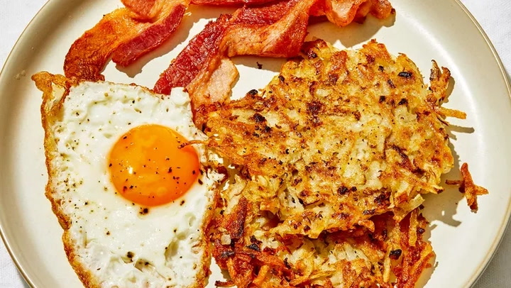
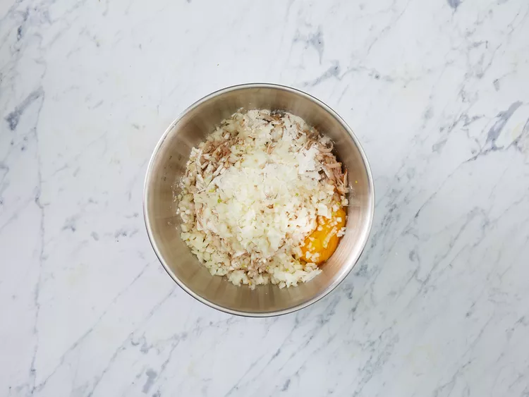
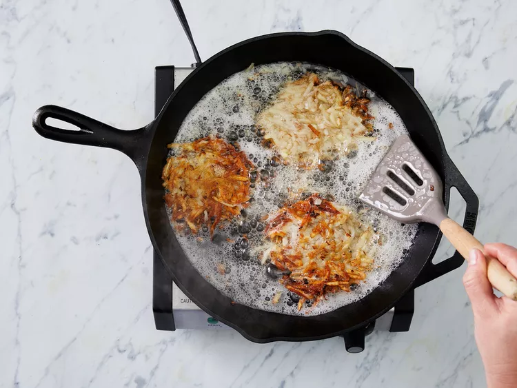

Homemade Crispy Hash Browns

Description
Good, old-fashioned, restaurant-style hash browns. Perfect with hot pepper sauce and ketchup, or fried eggs for breakfast!
If you're a firm believer that potatoes make basically any meal taste better, then you've come to the right place. Because we are too — especially when it comes to breakfast potatoes.
Choosing which type of breakfast potato to make can be a tough decision, but if you're craving crispy potatoes that remind you of your favorite restaurant, then you should try this hash brown recipe. The shredded potatoes are formed into pancake-like hash browns and lightly pan-fried for the perfect crispy texture that will pair deliciously with any breakfast dish.
How to Make Hash Browns
Believe it or not, making crispy hash browns is actually quite easy. First, shred your potatoes using your preferred method — either with a grater, food processor, or mandoline. Rinse the potatoes until the water is clear, then drain and squeeze out all the remaining liquid (this will ensure the hash browns are extra crispy).
Next, you'll add in your binding agents (flour and egg) as well as any other ingredients or seasonings. This recipe only calls for onion, but you could also add cheese, cayenne pepper, or garlic to the mixture.
Form your hash browns into patties (either one large hash brown or multiple smaller pancake-like hash browns) and pan fry them in oil, about five minutes on each side.
How to Make Hash Browns Crispy
To keep your hash browns crispy, make sure to heat the oil to sizzling before adding the patties and wait until the one side is golden brown before flipping.
You can also make your hash browns thinner because they will get crispier and cook more evenly.
What Type of Potato Works Best for Hash Browns?
If you care about the crisp, then you should use starchy potatoes, like russets or Idahoes. The only drawback is that the hash browns may be prone to falling apart because of the starchiness.
So, if you want your hash brown to stick together easily, then you should use a waxy potato, like new potatoes, Yukon Golds, or red potatoes. These potatoes have more moisture and will stick together in the pan, however, they won't crisp up as nicely as starchy potatoes.
How Do You Make Hash Browns Stay Together?
The biggest culprit that's making your hash browns come apart is moisture. You need to make sure the potatoes are dry before adding them to the flour and egg mixture. Whether you squeeze them out in a dish towel or use a salad spinner, get the potatoes as dry as they can be.
You can also use a different type of potato if you are worried about the hash browns breaking apart. If you use a waxy potato, they'll stick together nicely, but they won't get as crispy as you might want.
Another option is to add more ingredients that will act as binders. Try adding cheese to your hash browns because when the cheese melts it will be like a gooey glue that holds your potatoes together.
Ingredients
- 2 medium russet potatoes, shredded
- 1/4 cup all-purpose flour
- 1 large egg
- 1/2 medium onion, finely chopped
- 1 cup oil for frying, or as needed
- salt and pepper to taste
Directions steps
- Step 1
Gather all ingredients.

- Step 2
Rinse shredded potatoes until water is clear, then drain and squeeze dry. Place shreds in a bowl and mix in the onion, flour, and egg until evenly distributed.

- Step 3
Heat about 1/4 inch of oil in a large heavy skillet over medium-high heat. When oil is sizzling hot, place potatoes into the pan in a 1/2-inch thick layer. Cover the whole bottom of the pan, or make separate piles like pancakes.

- Step 4
Cook until nicely browned on the bottom, then flip over and brown on the other side. It should take at least 5 minutes per side. If you are cooking them in one big piece, it can be cut into quarters for easier flipping.

- Step 5
Remove from pan and drain on paper towels. Season with salt and pepper to taste, and serve immediately.

- Step 6
Serve hot and enjoy!
Cook's Notes
Squeezing the shredded potatoes until very dry is key. The drier the potatoes, the crispier the hash browns will be.
Add a pinch of cayenne or paprika for a kick of gentle heat if you like.
Serve the hash browns with crispy bacon or a crustless quiche for your next brunch or breakfast.
Home